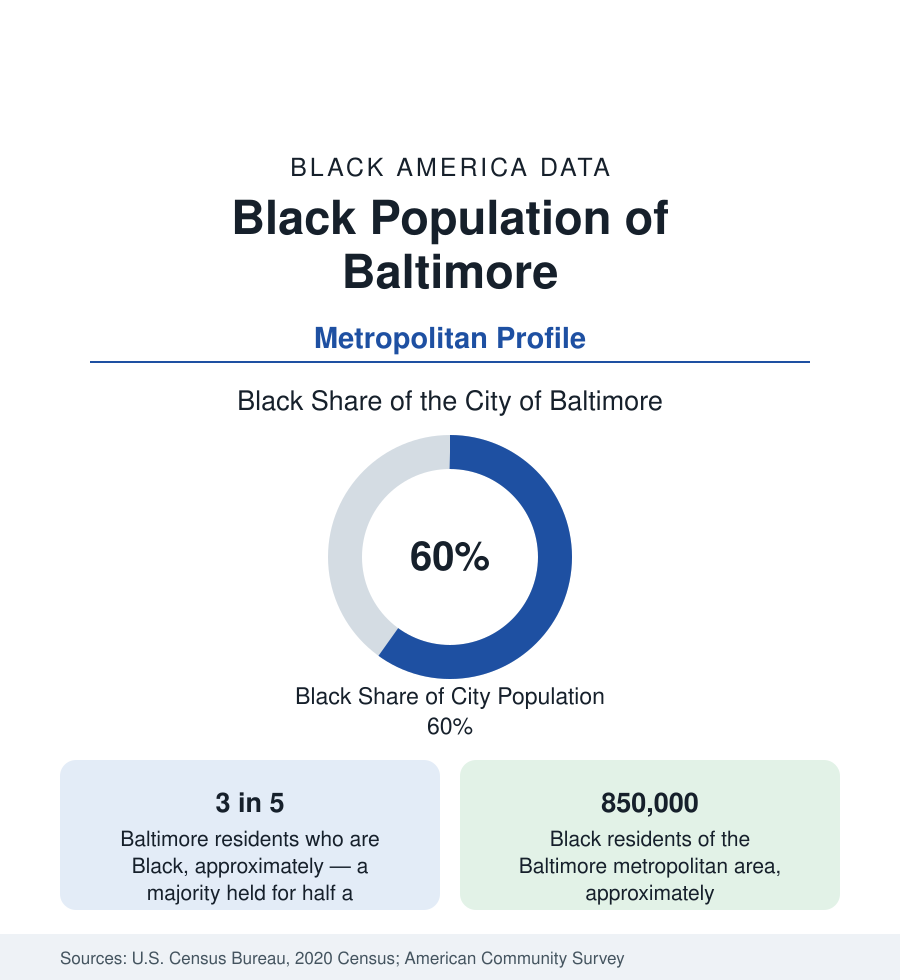

Black Cities
Black Baltimore: A Majority-Black City and Its Region
About three in five Baltimoreans are Black, and the metro holds some 850,000 Black residents. The census profile of a majority-Black city and its suburbs.

Baltimore is one of the few large American cities where Black residents are the majority — about three in five of its roughly 585,000 people — and they have been for half a century. The metropolitan area holds approximately 850,000 Black residents, extending from the city's rowhouse neighborhoods through Baltimore County's suburbs. Black Baltimore combines some of the deepest Black institutional roots in the nation with tract-level conditions that rank among the most difficult in this reference. This article profiles the population in the census data.
An Old Black City
Baltimore's Black history is older than the republic's industrial age: the city held one of the largest free Black populations of any American city before the Civil War, alongside a large enslaved population in the port and domestic economies, and its Black churches, mutual-aid societies, and schools date to the early nineteenth century. The Great Migration added Southern arrivals to this foundation, and the city's Black share climbed steadily across the twentieth century as the white population suburbanized — past half in the 1970s, to its present level near three-fifths. The historic geography runs west and east from the center: West Baltimore's Pennsylvania Avenue corridor was the city's Black commercial and entertainment spine, and East Baltimore grew around Johns Hopkins' medical campus — an adjacency of Black neighborhoods and one of the world's great medical institutions that shapes the region's health data to this day.
The Region: Baltimore County and Beyond
As throughout this section, the metro tells a second story. Baltimore County, which surrounds the independent city on three sides, holds a large and growing Black population — concentrated in its western and southwestern communities such as Randallstown, Woodlawn, Catonsville, and Essex — with a suburban profile of homeownership and income well above the city's. Randallstown and its surroundings are sometimes described as the county's Black professional heartland. Anne Arundel County adds Annapolis, the state capital, with its own centuries-old Black community; Howard County, among the most affluent counties in America, holds a significant Black population in Columbia, the planned city founded with an explicitly integrated design. The metro's Black average is thus a composite of a struggling urban core and some of Maryland's most prosperous suburbs.
Institutions: Morgan State and the HBCU Base
Baltimore's Black institutional anchor is Morgan State University — Maryland's largest HBCU, a research university enrolling roughly nine thousand students and designated a site of national importance in Black higher education — together with Coppin State University in West Baltimore. The city's Black professional class was built substantially on education, health care, and the public sector, and its Black-owned business community is documented in this reference's business coverage. The cultural record — from the Royal Theatre's era to the city's club music — matches the demographic one: Baltimore is a city whose mainstream culture is Black culture, a condition shared in this section only with Detroit, Memphis, and Atlanta's core.
Conditions in the Data
The city's Black indicators include the hardest in the mid-Atlantic region: neighborhood-level life expectancy in Baltimore varies by as much as two decades between its most and least advantaged districts, a span documented in the city's own health department analyses and among the largest within-city gaps in America. Poverty, vacancy, and the health data of this reference's public health section record the same concentration in West and East Baltimore tracts. These figures coexist with the county suburbs' prosperity a few miles away — the city-region divide in its sharpest mid-Atlantic form, and the reason this profile insists on reporting both jurisdictions in full.
Reading the Baltimore Numbers
Baltimore's lesson for the series is continuity under stress: a Black majority maintained across a half-century in which the city lost a third of its total population, anchored by institutions — churches, universities, a professional class — that the census counts only indirectly, through the people who remain. The metro figure of 850,000, the city share of three in five, and the two-decade internal life-expectancy span are the three numbers that, together, tell the truth of the place.
The Maryland state profile in the census section sets the city and its suburbs in the statewide account, where Baltimore's Black population forms the largest single component.
More in Black Cities
Black Atlanta: Population, Distribution, and Growth of a Black Metropolis
Metro Atlanta holds more than two million Black residents — roughly one in three, second only to New York. The suburban distribution, migration history, and composition of Black Atlanta in the census data.
Black New York: The Largest Black Population in America
The New York metropolitan area holds about 3.4 million Black residents — more than any metro in the nation — and the city itself about two million. The census profile.
Black Washington: The District and the Metro
The Washington metro holds about 1.6 million Black residents, and the District itself — long a majority-Black city — now records a Black share near 41 percent. The census profile.
Source: U.S. Census Bureau, 2020 Census; American Community Survey; Population Estimates Program.